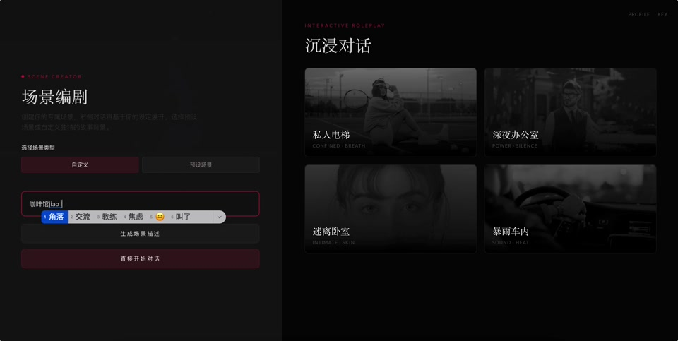
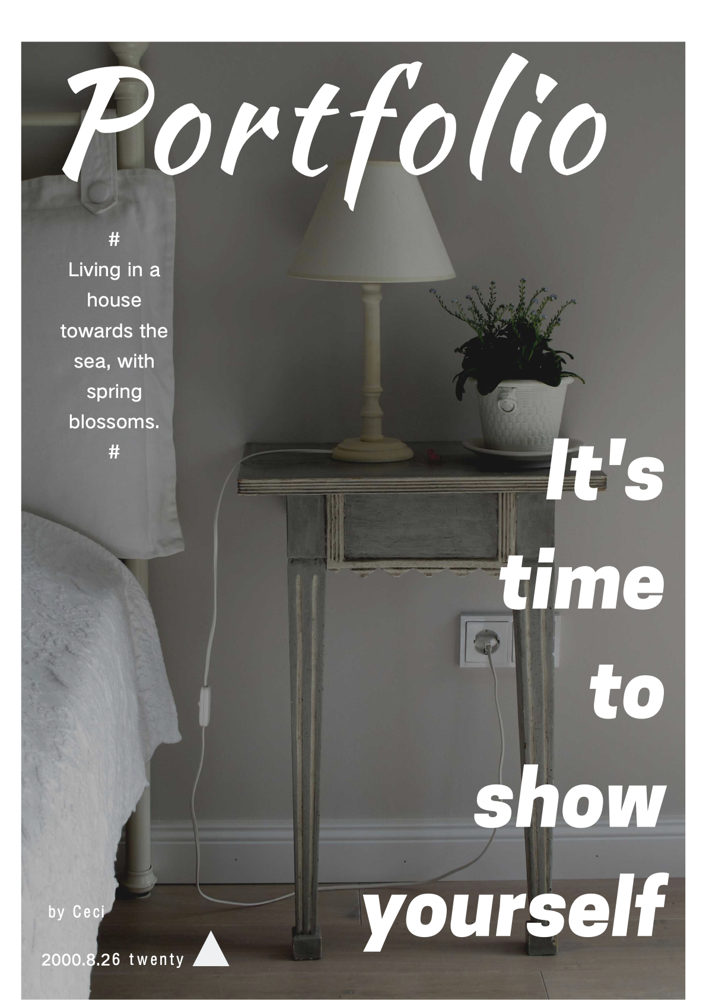
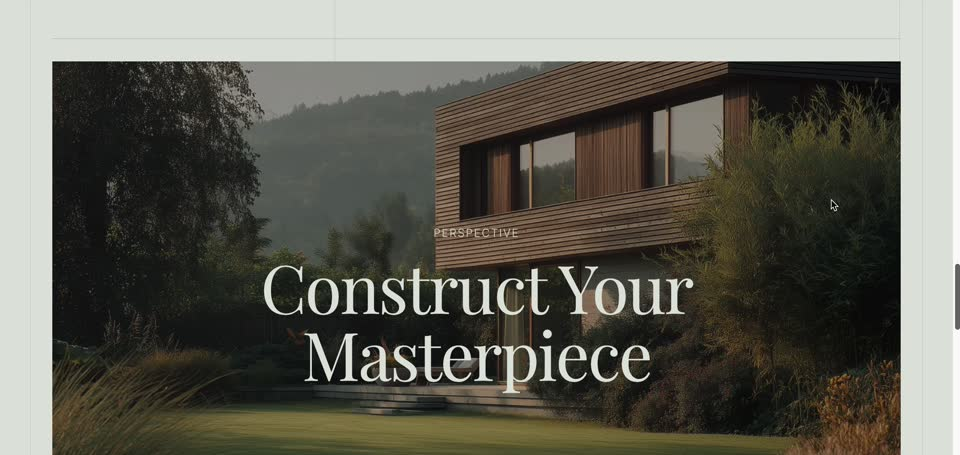

AI Builder
3 个重点项目，分别展示产品感、增长验证和工具化能力。

Project 01

Project 02

Project 03
More Works
自动化图文生成工具，帮助创作者提升从灵感到成片的效率。
围绕私域客服场景测试 AI 响应流程与效率体验，当前测试中。
团队合作项目，从生活场景切入，思考决策辅助与轻社交体验。
700+ 粉丝的内容阵地，用来沉淀 AI 新手经验与陪伴式内容表达。
个人播客，延伸了我对对话、声音表达和深度社交的兴趣。